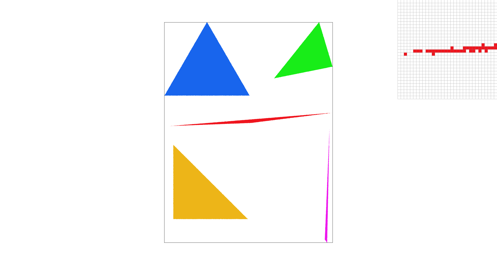
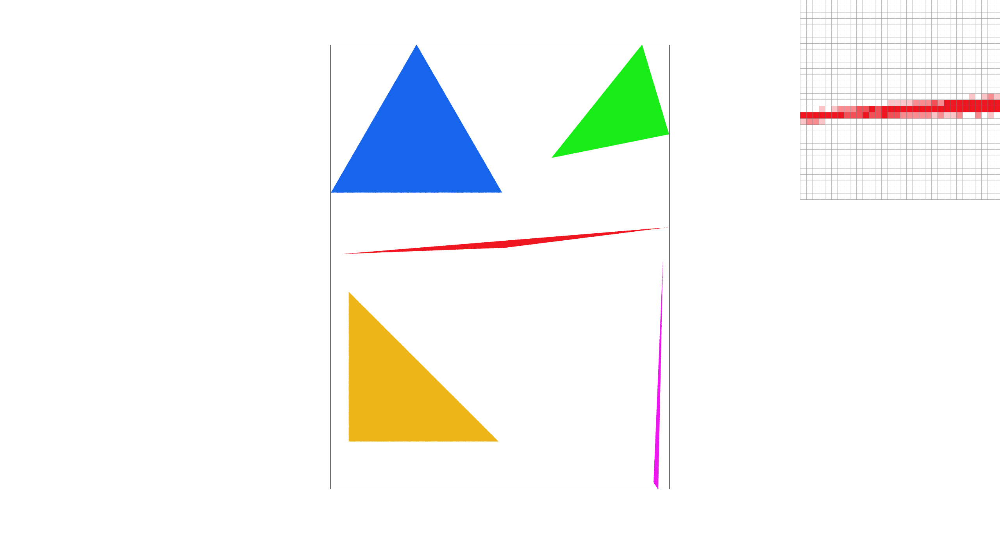
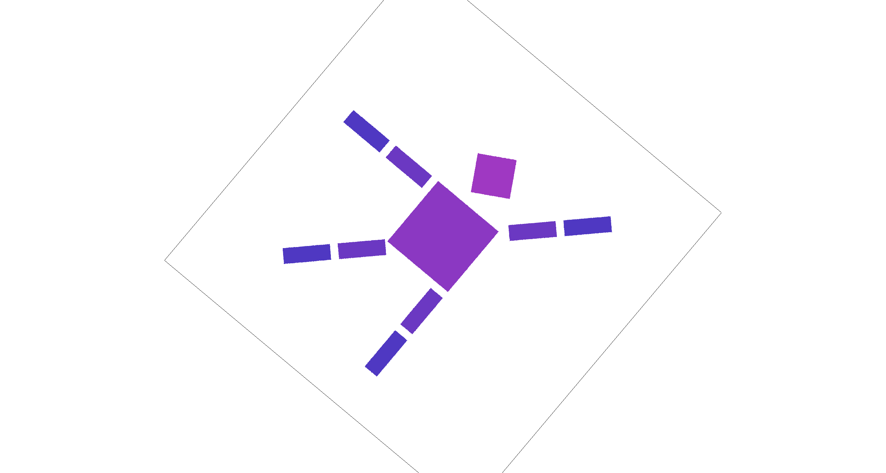
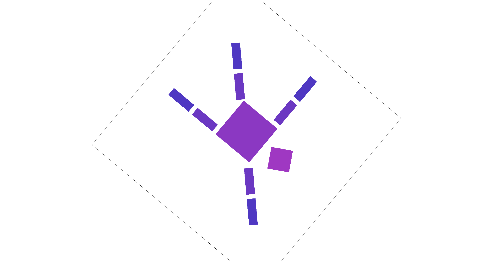
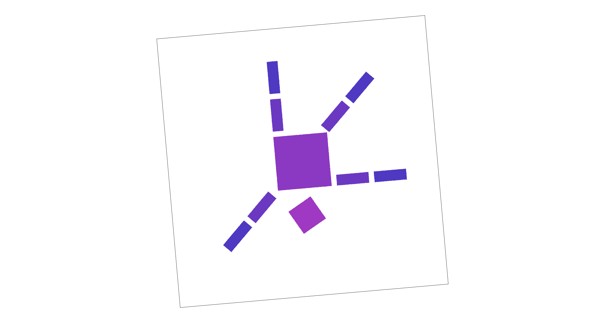
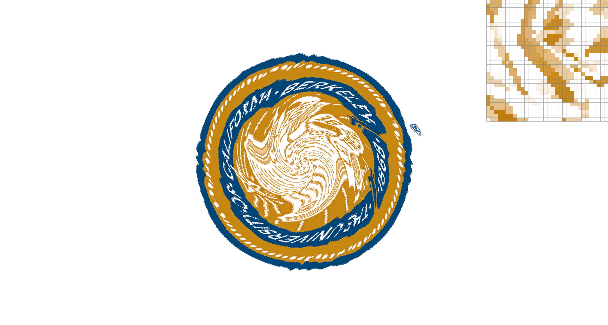
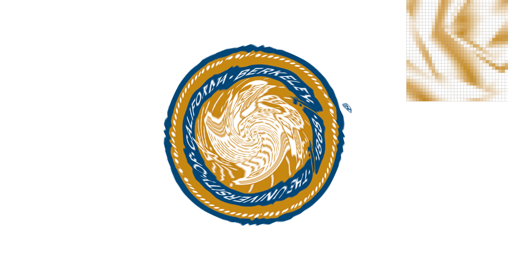
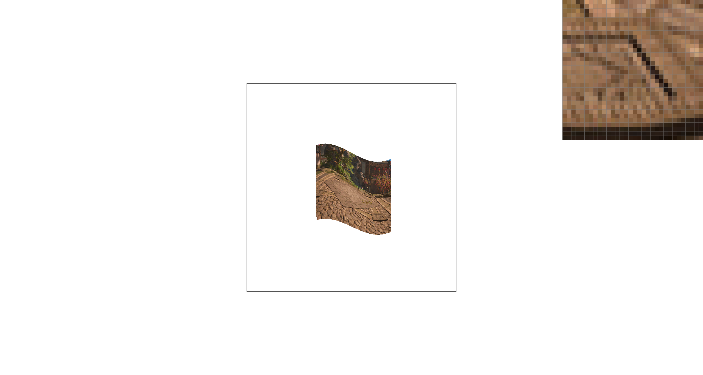
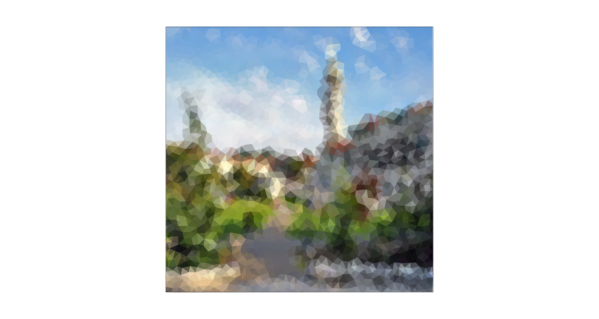

CS184/284A Spring 2025 Homework 1 Write-Up
Link to webpage: https://cs184.eecs.berkeley.edu/sp26/hw/hw1/
Link to GitHub repository: https://github.com/cal-cs184-student/hw1-rasterizer-arch

Overview
Give a high-level overview of what you implemented in this homework. Think about what you've built as a whole. Share your thoughts on what interesting things you've learned from completing the homework.Task 1: Drawing Single-Color Triangles
Explanation
For Task 1, we rasterize a triangle by first computing its axis-aligned bounding box in screen space. We take the minimum and maximum of the three vertex coordinates, convert them to an integer pixel range, and clamp the range to the framebuffer boundaries.
Next, we iterate over every pixel inside this bounding box. For each pixel, we test a single sample at the center of the pixel. To check whether the sample lies inside the triangle, we evaluate three edge tests (signed area / cross-product style tests) against the triangle's three directed edges with \[ e = -(p_x - x_0)(y_1 - y_0) + (p_y - y_0)(x_1 - x_0) \] The sample is considered inside if all three test values are non-negative, or if all three are non-positive. This makes the result independent of whether the input vertices are ordered clockwise or counter-clockwise. If the sample is inside, we fill the triangle's color to that pixel; otherwise we leave the pixel unchanged.
No worse than checking everything in the bounding box
This algorithm is no worse than one that checks every sample within the triangle's bounding box because it does exactly that: it only visits pixels inside the smallest rectangle that fully contains the triangle, and it performs a constant amount of work per visited pixel. It doesn't go over the entire framebuffer, and it does not do extra checks outside the bounding box, so its runtime matches the baseline bounding-box scanning approach up to constant factors.
Extra credit: optimization
We implement a scanline fill optimization: Instead of checking every pixel in the bounding box, we process the triangle one row at a time. For each pixel row, we find where that horizontal line intersects the triangle's three edges with the given raster_line method, which typically produces two intersection x-coordinates. We then fill only the pixels whose centers lie between the left and right intersection points. This reduces the number of pixel checks significantly:

|

|
Task 2: Antialiasing by Supersampling
Algorithm walkthrough
For Task 2, we implemented supersampling by modifying an intermediate
sample_buffer that stores multiple color samples for each output pixel. Each pixel is subdivided into a uniform grid of sub-pixels, and we store one color value per sub-pixel sample. Concretely, we allocate the buffer with
width * height * sample_rate, and the samples for pixel (x, y) occupy a contiguous block.
After all primitives have been rasterized into sample_buffer, we resolve the samples into the final framebuffer by averaging. For each output pixel (x, y), we sum its sub-sample colors in
sample_buffer and divide by sample_rate to get the average pixel color, and then write the result into
rgb_framebuffer_target as 8-bit RGB values. This averaging step is implemented in
resolve_to_framebuffer().
Why is supersampling useful?
Supersampling is useful because it reduces aliasing caused by taking only one sample per pixel. Near triangle boundaries, a pixel can be partially inside or outside the triangle. By taking multiple sub-pixel samples and averaging them, boundary pixels can produce intermediate colors, which smooths the edge.
Modifications
-
Updated
set_sample_rateandset_framebuffer_targetsosample_bufferis reallocated wheneversample_rate,width, orheightchanges. -
Updated
rasterize_triangleto perform supersampling: for each pixel in the triangle’s bounding box, we evaluate point-in-triangle tests at multiple sub-pixel sample locations and write covered sub-samples directly intosample_buffer. -
Updated
fill_pixelto keep points and lines working under supersampling by filling all sub-samples of a pixel with the same color. -
Updated
resolve_to_framebufferto downsample: for each output pixel, we average itssample_ratestored samples and write the resulting 8-bit RGB values intorgb_framebuffer_target.
Antialiasing
With the above method, we antialias triangle edges by taking multiple samples within each pixel and averaging them to produce the final pixel color. Pixels fully covered by the triangle remain solid, while boundary pixels become a blend of triangle and background colors, which smooths out jagged edges.
Points and lines still uses the default fill_pixel process without supersampling.
|
|

|

|

|
Explanation: As the sample rate increases, the edges become smoother because more sub-pixel samples are averaged within each pixel. With more sub-samples, boundary pixels are only partially covered, so their averaged color becomes a blend of the shape and the background instead of a hard on/off step.
Extra credit
We implemented jittered supersampling as an alternative antialiasing method.
Instead of sampling the center of each stratum, we sample a randomly jittered point inside it:
(sx + rand())/r, (sy + rand())/r. We use a simple hash-based RNG seeded by
(x, y, sx, sy) so the result is deterministic and reproducible.
With sample rate = 1, center sampling produces a visible gap, while jittered sampling varies the sample position within each pixel and appears more continuous. When we increase to sample rate = 4, jittered sampling tends to produce fuller coverage of the triangle because multiple randomized sub-samples better capture its area, but creates noise-like grain compared to center sampling.
|
|

|
|
|

|
Task 3: Transforms
We implemented the core 2D transformation operators translate, scale, and rotate using 3×3 homogeneous matrices. Using these transforms, we edited the robot SVG by adjusting the rotation of the head, right arm, and left leg to create a “happy waving” robot. We also applied a gradient fill to the body.
Extra credit
We added two unused keys, [ and ], to rotate the viewport interactively. Pressing these keys
updates a persistent rotation angle and triggers a redraw. To implement this feature, we modified the transform stack by
inserting an additional rotation into the NDC-to-screen mapping (while keeping the original SVG-to-NDC mapping unchanged).
Concretely, we compose the screen transform as a center-anchored rotation:
T(screen_center) · R(θ) · S(min(w,h)) · T(-0.5,-0.5), which rotates the rendered scene
about the viewport center without affecting the underlying SVG coordinates.
|  |

|
|  |  |
Task 4: Barycentric coordinates
Explanation
Barycentric coordinates express any point P inside a triangle as a weighted combination of the three vertices:
P = w0*A + w1*B + w2*C, where w0 + w1 + w2 = 1 and the weights are non-negative inside the triangle.
Intuitively, each weight measures how close P is to the opposite edge: near vertex A, w0 is large;
near edge BC, w0 goes to zero. This makes barycentric coordinates a natural way to interpolate attributes across a triangle.
Below is a result from svg/basic/test7.svg rendered with sample rate = 1,
showing the expected smoothly varying color wheel produced by barycentric color interpolation.
Task 5: "Pixel sampling" for texture mapping
Explanation
Pixel sampling determines how we compute a final color for a screen sample at (x,y) when rendering a textured triangle.
For each sub-sample point (x,y) that lies inside the triangle, we compute barycentric weights (w0,w1,w2),
use them to interpolate the corresponding texture coordinate (u,v) = w0(u0,v0) + w1(u1,v1) + w2(u2,v2), and then
fetch a color from the texture image at (u,v) (in the range [0,1]) to write into the sample buffer.
Nearest-neighbor maps (u,v) to the closest texel and returns that texel's
color, which is fast but can look blocky or show aliasing. Bilinear sampling fetches the four neighboring texels around
(u,v) and linearly blends them based on the fractional offsets, producing smoother results (especially under scaling) at the
cost of slightly more computation.
|

|
|
|
|

|
Comments
In these comparisons, nearest-neighbor preserves hard texel boundaries, so magnified regions look more blocky and can show visible jagged transitions in the zoom inset. Bilinear produces a smoother, less pixelated appearance with softer transitions. Increasing the sample rate reduces geometric aliasing at triangle edges for both methods, while bilinear's averaging becomes a bit blurred as it continues to smooth high-contrast texel changes.
The difference between the two methods is largest when the sample rate is low, because each pixel uses fewer samples and nearest sampling is more likely to miss or abruptly jump between texels. With a higher sample rate, the overall image becomes more stable due to supersampling, so the visual gap between nearest and bilinear is generally smaller. Moreover, the difference is larger for high-frequency textures. Nearest can alias and jump between texels, while bilinear averages neighbors to reduce aliasing.
Task 6: "Level Sampling" with mipmaps for texture mapping
Explanation
Level sampling determines which resolution level of a texture to sample from so that a screen pixel does not
capture more texture detail than it can represent. In the textured-triangle rasterizer, for each screen sample at (x,y)
we compute the corresponding (u,v) and also estimate how quickly (u,v) changes across the screen by evaluating
(u,v) at P+(1,0) and P+(0,1). These give p_dx_uv and p_dy_uv, which
approximate the texture-space footprint of one screen pixel.
We convert these UV differentials into texel-space lengths and choose a mip level using \(\text{level}=\log_2\!\left(\max\left(\left\|\frac{d\mathbf{UV}}{dx}\right\|,\ \left\|\frac{d\mathbf{UV}}{dy}\right\|\right)\right)\), clamped to the available range. We then implement three level sampling modes: L_ZERO always samples level 0, L_NEAREST rounds to the nearest integer level, and L_LINEAR linearly interpolates between the two nearest mip levels (trilinear in the level dimension). This reduces aliasing for high-frequency textures.
Tradeoffs
| Technique | Speed cost | Memory cost | Antialiasing quality |
|---|---|---|---|
| Samples per Pixel (Supersampling) |
High when with high sample rate | High (sample buffer scales with sample rate) | Very high with high sample rate |
| Pixel Sampling (Nearest vs Bilinear) |
Low (bilinear ≈ 4 texel reads vs nearest 1) | None (no extra buffers/textures) | Moderate: reduces blockiness |
| Level Sampling (Mipmap selection) |
Medium (compute level + possibly sample 2 levels) | Medium (stores mipmaps, ~1/3 extra texture memory) | High for high-frequency: reduces aliasing |
The below image looks at the paving pattern in a video game. Compared to P_NEAREST, P_LINEAR produces smoother, less blocky texture values in the zoomed region, but looks slightly blurrier due to averaging neighboring texels. Switching from L_ZERO to L_NEAREST uses a more appropriate mip level for minification, reducing high-frequency aliasing/striping in the zoom inset and making the texture appear more stable.
|
|

|
|
|
|
(Optional) Task 7: Extra Credit - Draw Something Creative!
To create our procedural competition SVG, we converts a Berkeley campus photo into a low-poly mosaic. The script first resizes the input image to 800×800, then generates roughly uniform sample points using Poisson-disk sampling (so points are well-spaced across the canvas). Next, it performs a Delaunay triangulation over these points to obtain a set of triangles that fully cover the image (we also add boundary points to avoid holes near the edges). For each triangle, we sample the photos RGB values at its three vertices and fill the triangle with the average of those three colors. Rendering the resulting SVG produces a triangle-based approximation of the original Berkeley photo.

|

|